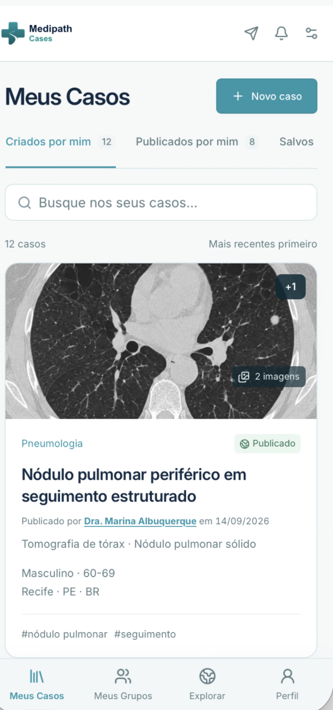
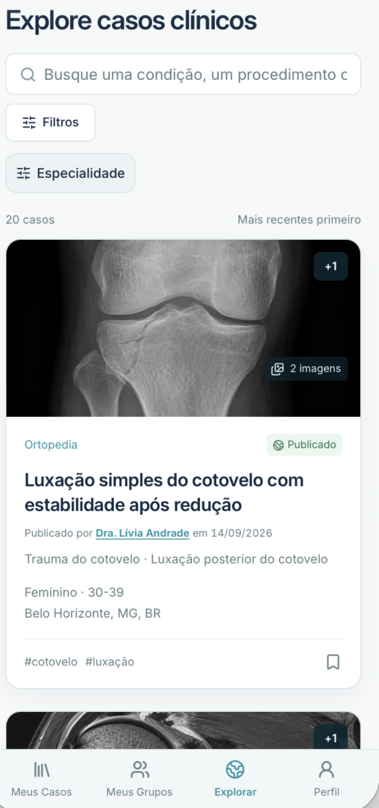

Salve
Organize casos interessantes, imagens e informações clínicas em uma biblioteca privada.
 Entrar
Entrar
PARA MÉDICOS
Guarde o que vale a pena lembrar. Compartilhe o que vale a pena discutir.
Medipath Cases é gratuito para médicos.


Sua biblioteca clínica, organizada e sempre acessível.
UMA BIBLIOTECA CLÍNICA VISUAL
Registre imagens e informações clínicas em um espaço pensado para consulta futura, ensino e organização de pesquisa. Organize casos por temas, especialidades e hashtags para facilitar pesquisa, revisão e aprendizado.
DO SEU ARQUIVO À COLABORAÇÃO
Organize casos interessantes, imagens e informações clínicas em uma biblioteca privada.
Crie diferentes grupos privados para equipes, especialidades, hospitais, interesses de pesquisa ou colegas selecionados. Compartilhe e discuta casos, troque comentários e mantenha a conversa clínica conectada ao caso compartilhado.
Explore casos clínicos compartilhados por profissionais de diferentes especialidades.
USO PROFISSIONAL
Casos permanecem privados por padrão. O compartilhamento com grupos e a publicação seguem fluxos separados, com revisão de informações identificáveis e práticas alinhadas aos princípios da LGPD.
100% GRATUITO PARA MÉDICOS
Salve, compartilhe e explore casos clínicos com outros médicos.